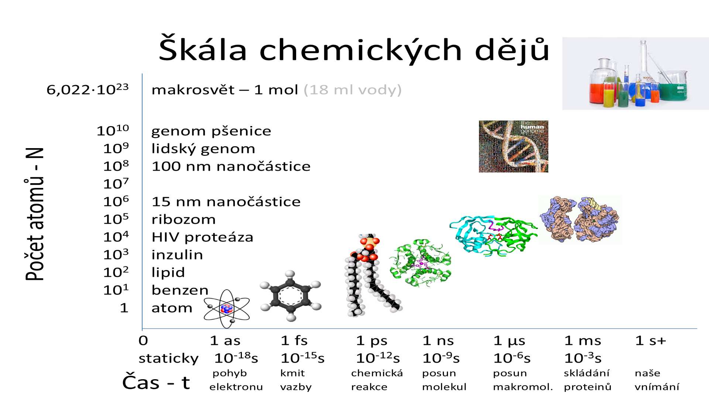
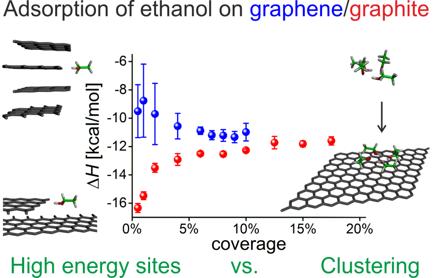
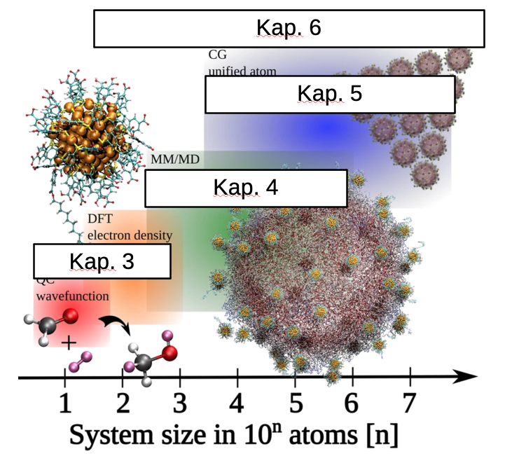
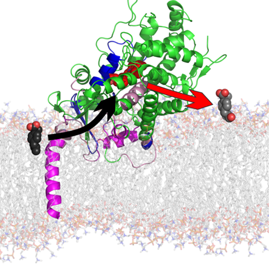
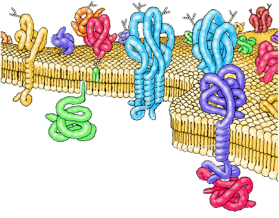
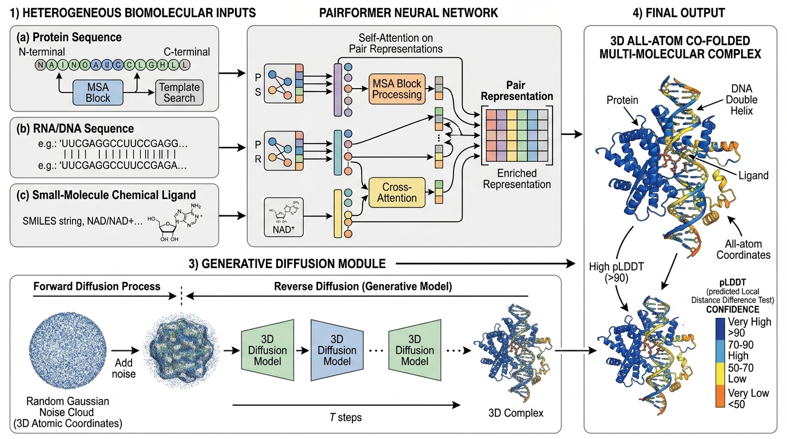
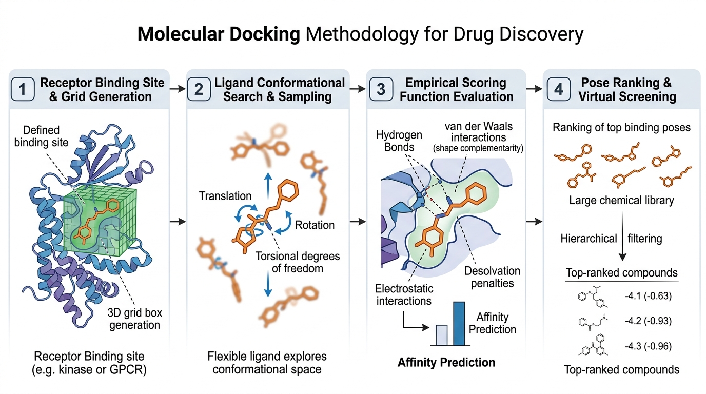
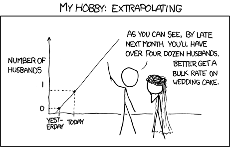
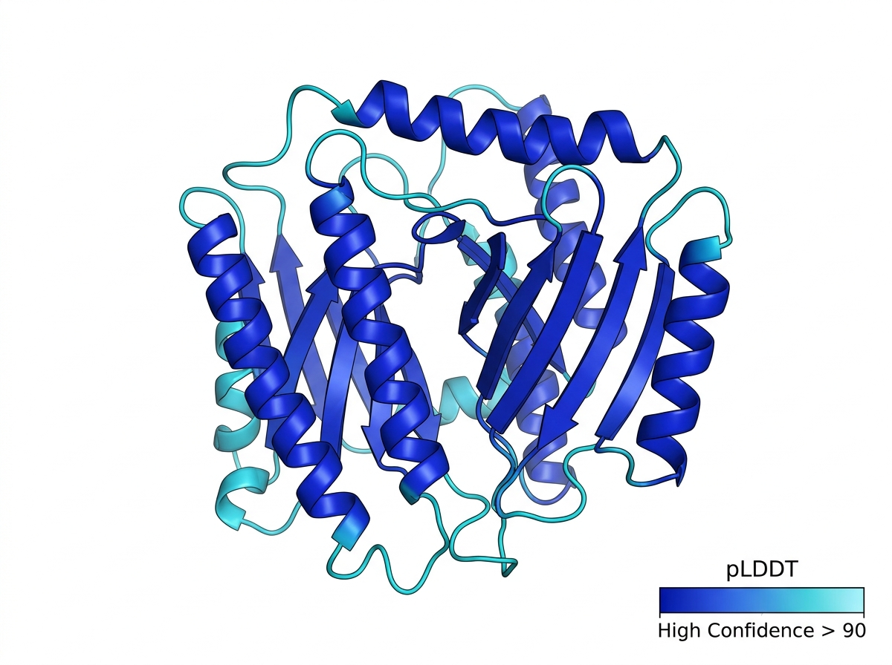
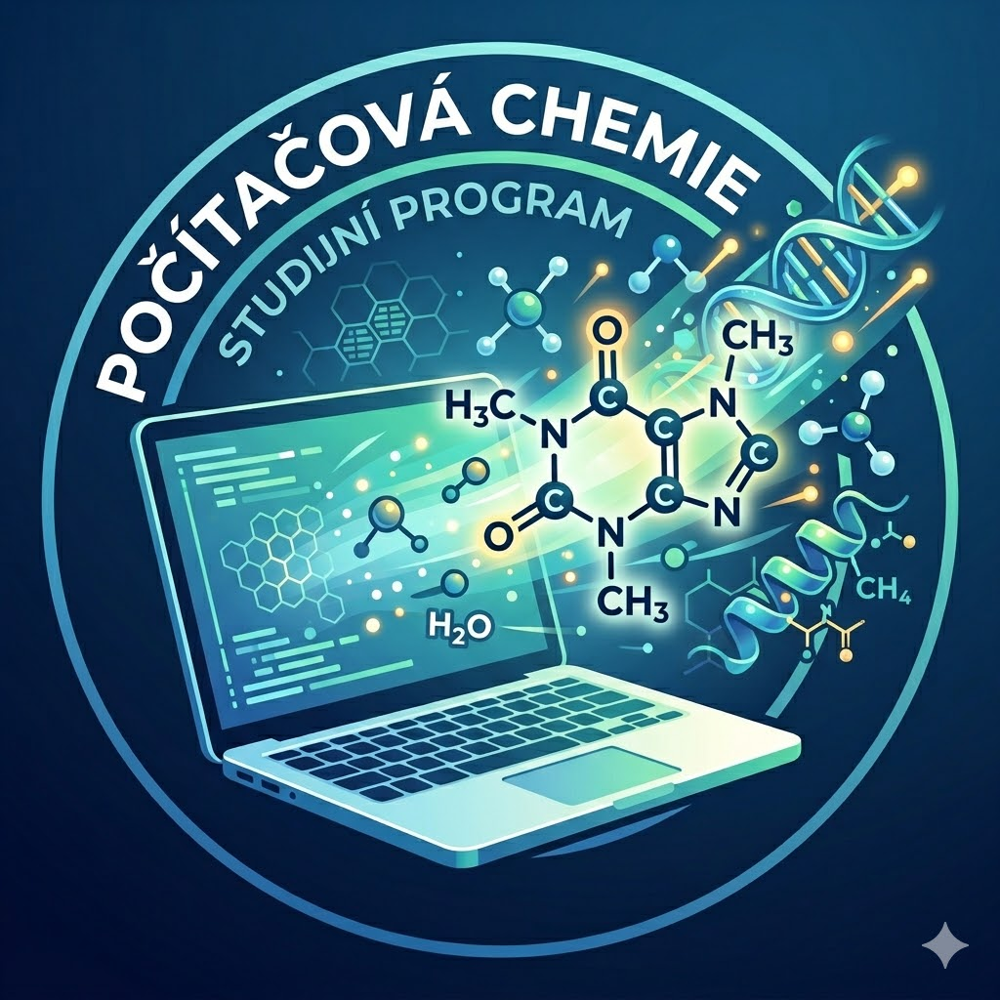

Computational Chemistry
What We Can And Cannot Calculate / Simulate
🎯 Today's Mission at Chemie v praxi
A practical roadmap: routine tools in industry vs. cutting-edge research vs. physical impossibilities.
Why Calculate When We Can Experiment?
Albert Einstein's aphorism and the role of in silico modeling in modern chemical practice
“Nobody believes a theory except the person who made it.
Everyone believes an experiment except the person who made it.”
1. Atomic & Femtosecond Resolution
• In silico: Direct trajectories of individual atoms at $\Delta t = 2\text{ fs}$ resolution.
2. Capturing Fleeting Transition States
• Intermediates live for $10^{-15}\text{ s}$ — simulation is our only camera for bond cleavage.
3. Pre-Synthetic Drug & Material Design
• Saves months of benchwork, funding, and hazardous chemical waste.
👁️ What You See, You Understand Better
Real-time 3D visualization: Bacterial Flagellar Motor (Motor-Hook Complex)
The Multiverse of Chemical Scales
Bridging 24 orders of magnitude in time and particle count: from electrons to macroscopic flasks

The Trade-Off Triangle: Computational Uncertainty Principle
Accuracy vs. System Size vs. Compute Time — You can only choose 2 out of 3
Point D: Holy Grail (Multiscale QM/MM & AI)
Holy GrailCombining methods: the enzyme active site is modeled rigorously with quantum mechanics, while the surrounding protein and thousands of solvent molecules are handled with fast molecular mechanics (Nobel Prize 2013). Modern approaches employ machine learning to predict quantum-accurate energies in real time.
The Iron Law: Pick Any 2 of 3
Scale Explorer: Which Method Resolves Which Reality?
Click each level to inspect governing laws, system limits, and illustrative models
Quantum Chemistry (QM / DFT)
Solves the electronic Schrödinger equation (Kohn-Sham DFT). Directly models electron density, molecular orbitals, and chemical reactions without empirical parameters.

The Electron Realm: Schrödinger & DFT
Heisenberg uncertainty, electron density, and real-world biosensor applications

- Electronic Transitions: UV-Vis absorption spectra, fluorescence & color.
- Reaction Barriers: Activation energies, transition states & bond cleavage.
- Surface Chemistry: Analyte binding on 2D nanomaterials & gas biosensors.
- Steep Exponential Wall: $2\times$ electrons in CCSD(T) $\to 2^7 = 128\times$ compute time!
- Strict Atom Limit: Routine for $< 200$ atoms; impossible for an entire ribosome ($10^5$ atoms).
Why Classical MD Cannot Break a Chemical Bond
Harmonic spring ($F = -k \cdot \Delta r \to \infty$) vs. Quantum bond dissociation
1. Classical MD Approximation (Harmonic Spring)
• Pulling harder increases restoring force indefinitely ($F \to \infty$).
• Bonds NEVER break in classical MD — atoms are trapped on an unbreakable wire.
2. Quantum Reality (Morse Dissociation)
• Cleaves homolytically into free radicals ($A^\bullet + B^\bullet$, $F \to 0$).
• Simulating reactions & covalent inhibition strictly requires QM or QM/MM.
Atoms as Balls & Springs: Newtonian MD
Integrating Newton's second law ($F = ma$) in 2-femtosecond timesteps
- Conformational Ensembles: Thermal fluctuations & protein breathing.
- Transport & Diffusion: Solvation shells, viscosity & ion permeation.
- Large Assemblies: Millions of atoms (lipids, receptors, viral capsids).
- No Bond Cleavage: Cannot break or form chemical bonds (rigid springs).
- No pH or Proton Hopping: Fixed topologies ($2\text{H}_2\text{O} \not\to \text{H}_3\text{O}^+ + \text{OH}^-$).
- No Electronic Excitation: Zero electron degrees of freedom.
Membranes, Transporters & Cytochromes
Unravelling drug metabolism and membrane permeability in silico at UPOL


CYP450 Metabolism & Tunnels UPOL Tools
Cytochromes P450 metabolize >70% of clinical drugs. MD revealed critical substrate entrance and metabolite egress channels.
Membrane Permeation & MolMeDB molmedb.upol.cz ↗
• Directly resolves how drug candidates cross lipid membrane bilayers.
AlphaFold, Co-Folding & Molecular Docking
From 1D sequences to 3D folds, multimer co-folding, and ligand docking in drug discovery


- Sub-Ångström Folds: Static backbone coordinates in seconds.
- Quaternary Co-Folding: Protein, nucleic acid & ligand assemblies (AF3).
- Virtual Screening: Rapidly filters millions of non-binders.
- No Dynamics: Static snapshot; misses allostery & ensembles.
- Mutations ($\Delta\Delta G$): Cannot predict single-residue stability shifts.
- Disordered Loops: Fails on intrinsically unstructured regions.
- True Affinity ($\Delta G$): Score is a geometric filter, not a calorimeter.
QSAR: From Molecular Structure to Biological Activity
Live molecular drawing, descriptor encoding $E(\text{Structure})$, and Lipinski drug-likeness evaluation
Aspirin (Acetylsalicylic acid)
$\text{Activity} = M(E(\text{Structure}))$QSAR encodes molecular graphs into numerical descriptors ($E$). Machine learning ($M$) maps these vectors to bioactivity or ADMET properties.
QSAR Modeling: Descriptors, ML & The Applicability Domain
Turning chemical graphs into predictive feature vectors, learning algorithms, and the hazard of extrapolation
1. Descriptors: Structure Encoding $E(\text{Structure})$ Feature Vectors
- 1D (Constitutional): MW, atom counts (C, N, O, halogens), formal charge.
- 2D (Topological): Morgan / ECFP4 (1024-bit circular), MACCS keys (166 bits), TPSA.
- 3D (Spatial & Fields): SASA, dipole moments, 3D pharmacophores, steric fields.
2. Machine Learning Algorithms: $\text{Activity} = M(E)$ Supervised ML
- Tree Ensembles (Random Forest, XGBoost): Robust to assay noise & non-linearities.
- Support Vector Machines (SVM): Optimal separating hyperplanes via RBF kernels.
- Graph Neural Networks (GNN / Chemprop): End-to-end learning directly on molecular graphs.
- Validation Rigor: $k$-fold cross-validation ($Q^2 > 0.6$) & $Y$-scrambling.

Can We Simulate It? Reality vs. Hype
Click each real-world chemical question to reveal computational feasibility, runtime limits, and molecular evidence
Which chemical questions are solved routines, and which remain physical impossibilities?

The Engine Room: What Does It Take?
Supercomputing power at Palacký University Olomouc & National MetaCentrum (CESNET)
1. Local Department Cluster (KFC UPOL) Departmental
- Dedicated Linux Clusters: ~3,100 CPU cores & 7.3 TB RAM on Debian Linux across department servers (Bobik, Sam, Melian).
- Specialized Nodes: High-frequency CPU nodes for MD (Ingwe, Olwe, Tulkas) and massive RAM nodes for QM electron density matrices (Melian, Ulmo, Nessa).
2. MetaCentrum (CESNET / e-INFRA CZ) metacentrum.cz ↗
The Czech National Grid Infrastructure provides free high-performance computing & data storage services to all researchers, educators, and students in Czech academia (via eduID.cz).
The Definitive "Can vs. Cannot" Matrix
A practical reference guide for modern computational chemistry
- Ground and excited electronic states for molecules $< 200$ atoms.
- Activation barriers, reaction coordinates, and transition states (QM).
- Microsecond-scale conformational dynamics of proteins and bilayers ($10^6$ atoms).
- High-throughput virtual screening of $10^8$ small molecules for lead finding.
- Static 3D protein folds from 1D sequences with AlphaFold / AI.
- Spectroscopic properties: NMR shifts, IR vibrations, UV-Vis absorption.
- Bond breaking with classical molecular dynamics (Hooke's spring limit).
- Macroscopic timescales ($> 1\text{ ms}$) in all-atom resolution.
- True experimental binding affinities ($\pm 0.5\text{ kcal/mol}$) in seconds.
- Chemical reactivity of massive macromolecular assemblies ($> 10^5$ atoms).
- Reliable AI property predictions outside the Applicability Domain.
- Entire cellular life cycles in full atomistic detail.
The Next Frontier: Study at UPOL
Training the next generation of in silico scientists in Olomouc
Bachelor Program "Počítačová chemie" In Accreditation
Brand new study program at Palacký University Olomouc connecting chemistry, molecular modeling, supercomputing, and AI.
4 Core Curriculum Pillars
- 1. Quantum Chemistry: Electronic structure, UV-Vis spectra, reaction mechanisms.
- 2. Molecular Dynamics: Biomembranes, protein folding, transport channels.
- 3. Chemoinformatics: Chemical graphs, SMILES encoding, QSAR modeling.
- 4. Python, AI & HPC: Machine learning, deep learning, supercomputing clusters.
High-Demand Career Pathways
- Pharma R&D: Structure-based drug design & ADMET screening.
- Biotech & Enzymes: De novo biocatalyst & protein design.
- Advanced Materials: Nanotech, 2D graphene sensors, battery electrolytes.
- Software & AI: Scientific databases, cheminformatics toolkits, and AI.
Hands-on Research from Year 1 Open Labs
Direct student access to department clusters & MetaCentrum, contributing to global open databases (MolMeDB, MOLEonline).
Thank You For Your Attention!
Open discussion, questions, research collaborations & key contacts

Prof. RNDr. Karel Berka, Ph.D.
Department of Physical Chemistry • Faculty of Science • Palacký University Olomouc
Acknowledgements & Research Support
This research and development is proudly supported by public grants and e-infrastructures:
National & International Collaborations
University of Cambridge, University of Oxford, University of Barcelona, CEITEC, IOCB Prague (ÚOCHB AV ČR), Procter & Gamble, and academic research partners worldwide.
Questions & Discussion
Explore all our open computational tools and databases online: